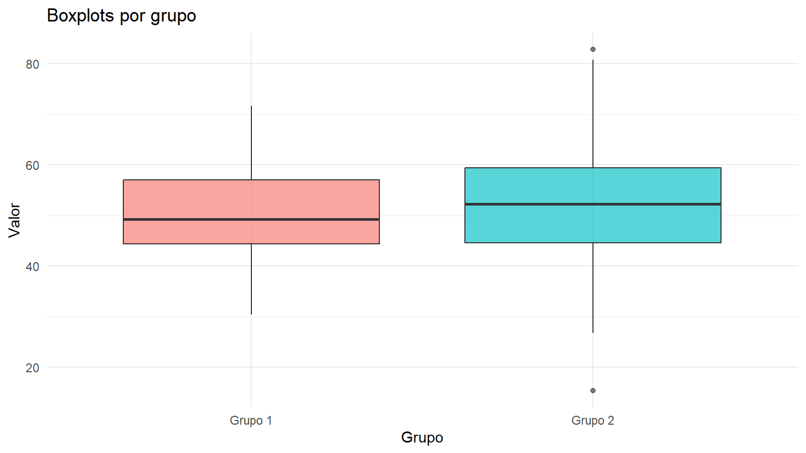
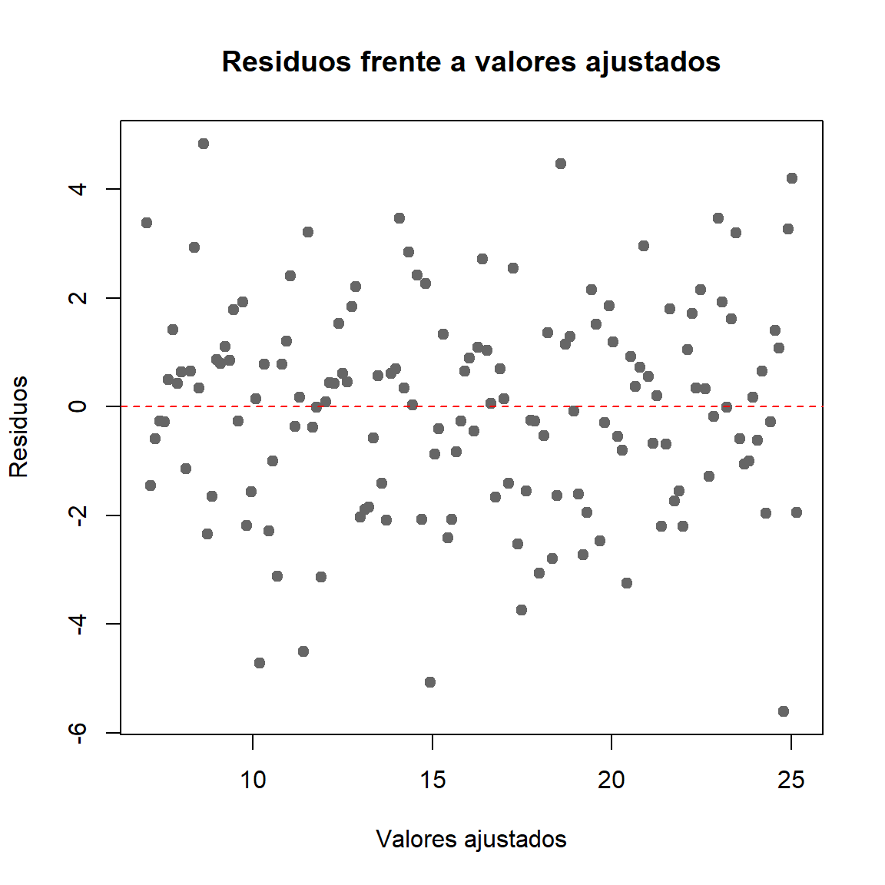
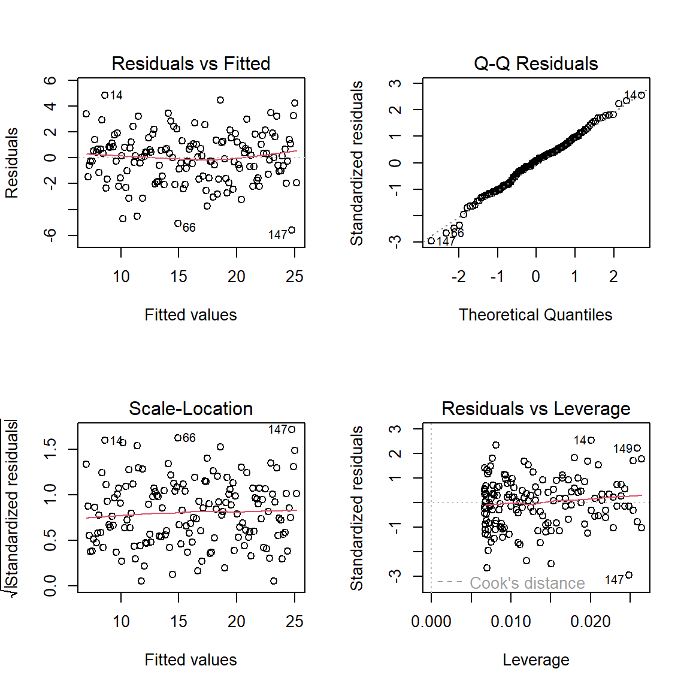

La homocedasticidad es la propiedad por la cual dos o más poblaciones o grupos tienen la misma varianza, o, en un modelo estadístico, los errores presentan una varianza constante bajo las condiciones del modelo. La heterocedasticidad ocurre cuando la varianza cambia entre grupos o depende de los valores ajustados, de una variable explicativa u otra característica.
Evaluar la homocedasticidad ayuda a seleccionar e interpretar procedimientos estadísticos como la prueba t para muestras independientes con varianzas agrupadas y el ANOVA clásico. En regresión, la heterocedasticidad puede afectar los errores estándar convencionales y, por tanto, las pruebas de hipótesis y los intervalos de confianza, aunque los coeficientes de mínimos cuadrados ordinarios pueden seguir siendo insesgados bajo las condiciones apropiadas de exogeneidad.
Principio clave: no se debe concluir que las varianzas son iguales solo porque una prueba no sea significativa. Combine gráficos, pruebas formales, diseño del estudio y conocimiento de los datos.
2 .Conceptos fundamentales
2.1 .Varianza y homocedasticidad
La varianza poblacional mide la dispersión de una variable respecto de su media:
\sigma^2 = \operatorname{Var}(X)
= E[(X-\mu)^2].
En una comparación de k grupos, el supuesto de homocedasticidad se expresa como:
H_0:\sigma_1^2=\sigma_2^2=\cdots=\sigma_k^2.
La alternativa general es que al menos una varianza difiere de las demás.
para todas las observaciones i, donde \varepsilon_i representa el error aleatorio y X_i las variables explicativas. En la práctica se inspeccionan residuos como aproximación a los errores no observables.
2.2 .Homocedasticidad y normalidad son supuestos diferentes
Normalidad: se refiere a la forma de una distribución, por ejemplo, la de los errores o residuos.
Homocedasticidad: se refiere a la constancia de la varianza entre grupos o a lo largo de los valores ajustados.
Independencia: se refiere a la ausencia de dependencia no modelada entre observaciones.
Puede haber datos normales con varianzas distintas, o datos no normales con varianzas similares. Por eso, una prueba de normalidad no sustituye a una prueba de homogeneidad de varianzas.
2.3 ¿Por qué importa?
La homocedasticidad es relevante para ciertos procedimientos clásicos porque ayuda a justificar sus errores estándar y distribuciones de referencia. Por ejemplo:
La prueba t clásica con varianza combinada supone igualdad de varianzas poblacionales.
El ANOVA clásico supone varianzas iguales entre grupos, además de otros supuestos.
En regresión lineal, la homocedasticidad forma parte de las condiciones habituales para que los errores estándar clásicos sean apropiados.
La heterocedasticidad no siempre invalida el análisis completo. Dependiendo del contexto, se pueden utilizar la prueba t de Welch, ANOVA de Welch, errores estándar robustos, modelos que representen la varianza o métodos de remuestreo adecuados.
3 .Métodos gráficos
Los gráficos permiten detectar patrones que una prueba formal puede no revelar o cuya importancia práctica puede quedar oculta por el valor p.
3.1 .Diagramas de caja por grupo
Comparan la mediana, los cuartiles y la extensión de los datos en cada grupo. Diferencias visibles en la amplitud de las cajas o los bigotes pueden sugerir varianzas distintas.
Limitaciones: el diagrama de caja no es una prueba formal de igualdad de varianzas. Su aspecto también depende de la asimetría, los valores extremos y el tamaño muestral.
Ver código
library(ggplot2)set.seed(123)grupo1 <-rnorm(50, mean =50, sd =10)grupo2 <-rnorm(50, mean =50, sd =15)datos <-data.frame(valor =c(grupo1, grupo2),grupo =factor(rep(c("Grupo 1", "Grupo 2"), each =50)))ggplot(datos, aes(x = grupo, y = valor, fill = grupo)) +geom_boxplot(alpha =0.65) +labs(title ="Boxplots por grupo", x ="Grupo", y ="Valor") +theme_minimal() +theme(legend.position ="none")

Figura 1: Diagramas de caja para dos grupos con distinta dispersión
3.2 .Comparación de desviaciones estándar
La desviación estándar muestral es una medida de dispersión en las mismas unidades de la variable. Puede resumirse por grupo, pero diferencias descriptivas no equivalen automáticamente a diferencias estadísticamente significativas.
Ver código
# Resumen descriptivo por gruporesumen <-aggregate(valor ~ grupo, data = datos, FUN = mean)names(resumen)[2] <-"media"desviaciones <-aggregate(valor ~ grupo, data = datos, FUN = sd)names(desviaciones)[2] <-"desviacion_estandar"varianzas <-aggregate(valor ~ grupo, data = datos, FUN = var)names(varianzas)[2] <-"varianza"merge(merge(resumen, desviaciones, by ="grupo"), varianzas, by ="grupo")
grupo media desviacion_estandar varianza
1 Grupo 1 50.34404 9.25870 85.72352
2 Grupo 2 52.19612 13.58171 184.46280
3.3 .Residuos frente a valores ajustados en regresión
En regresión, se representa el residuo frente al valor ajustado. Una nube sin patrón claro y con dispersión vertical aproximadamente constante es compatible con homocedasticidad. Un patrón de embudo —la dispersión aumenta o disminuye— puede sugerir heterocedasticidad.
Ver código
set.seed(321)x <-seq(1, 10, length.out =150)y <-5+2*x +rnorm(150, sd =2)modelo <-lm(y ~ x)plot(fitted(modelo), resid(modelo),xlab ="Valores ajustados", ylab ="Residuos",main ="Residuos frente a valores ajustados",pch =19, col ="grey40")abline(h =0, lty =2, col ="red")

Figura 2: Gráfico de residuos frente a valores ajustados
Este ejemplo simula errores de varianza constante. Para evaluar un modelo real, es preferible revisar también los gráficos diagnósticos estándar:
Ver código
par(mfrow =c(2, 2))plot(modelo)

Ver código
par(mfrow =c(1, 1))
El gráfico de residuos frente a ajustados es especialmente útil para detectar patrones de dispersión, pero no prueba por sí solo la homocedasticidad.
4 .Pruebas analíticas de igualdad de varianzas entre grupos
Las pruebas formales contrastan hipótesis sobre la igualdad de varianzas. Para comparaciones entre varios grupos, las alternativas más habituales incluyen Bartlett, Levene y Brown-Forsythe. Para dos grupos normales, puede utilizarse la prueba F de varianzas.
4.1 .Prueba F para dos varianzas
La prueba F compara las varianzas de dos poblaciones independientes. Sus hipótesis bilaterales son:
El estadístico se basa en la razón de las varianzas muestrales:
F=\frac{S_1^2}{S_2^2}.
Bajo H_0 y el supuesto de normalidad en ambas poblaciones, el estadístico sigue una distribución F con n_1-1 y n_2-1 grados de libertad, según el orden de las muestras.
En R, var.test() realiza esta prueba.
Ver código
var.test(grupo1, grupo2)
F test to compare two variances
data: grupo1 and grupo2
F = 0.46472, num df = 49, denom df = 49, p-value = 0.008364
alternative hypothesis: true ratio of variances is not equal to 1
95 percent confidence interval:
0.2637174 0.8189240
sample estimates:
ratio of variances
0.4647198
Ventajas: es directa y puede ser potente cuando la normalidad se cumple.
Limitaciones: es sensible a la falta de normalidad y a valores extremos. No se recomienda como opción general cuando la distribución de los datos es marcadamente no normal.
La función var.test(valor ~ grupo, data = datos) también puede utilizarse con una variable numérica y un factor con dos grupos.
4.2 .Prueba de Bartlett
La prueba de Bartlett contrasta la igualdad de varianzas en dos o más grupos. Es eficiente cuando las poblaciones son normales, pero sensible a desviaciones de la normalidad.
Hipótesis:
H_0:\sigma_1^2=\sigma_2^2=\cdots=\sigma_k^2.
En R:
Ver código
bartlett.test(valor ~ grupo, data = datos)
Bartlett test of homogeneity of variances
data: valor by grupo
Bartlett's K-squared = 6.9534, df = 1, p-value = 0.008366
Se recomienda cuando la normalidad de los grupos es razonable. Si hay asimetría importante o valores extremos, conviene considerar Levene o Brown-Forsythe.
4.3 .Prueba de Levene
La prueba de Levene evalúa si las desviaciones absolutas respecto de una medida central son similares entre grupos. En su versión clásica se calculan desviaciones respecto de la media de cada grupo; existen variantes más robustas.
Hipótesis:
H_0: todas las varianzas poblacionales son iguales.
H_1: al menos una varianza poblacional es diferente.
En R, leveneTest() del paquete car permite realizarla. Por defecto, utiliza desviaciones absolutas respecto de la mediana, opción que suele conocerse como variante de Brown-Forsythe; el centro puede cambiarse a la media.
Ver código
# install.packages("car") # Ejecutar una sola vez si hace faltalibrary(car)leveneTest(valor ~ grupo, data = datos) # Centro en la mediana
Levene's Test for Homogeneity of Variance (center = median)
Df F value Pr(>F)
group 1 4.4228 0.03802 *
98
---
Signif. codes: 0 '***' 0.001 '**' 0.01 '*' 0.05 '.' 0.1 ' ' 1
Ver código
leveneTest(valor ~ grupo, data = datos, center = mean) # Centro en la media
Levene's Test for Homogeneity of Variance (center = mean)
Df F value Pr(>F)
group 1 4.3863 0.03881 *
98
---
Signif. codes: 0 '***' 0.001 '**' 0.01 '*' 0.05 '.' 0.1 ' ' 1
Ventajas:
Puede utilizarse con dos o más grupos.
La versión centrada en la mediana es más robusta frente a la falta de normalidad que Bartlett y la prueba F clásica en muchas situaciones.
Limitaciones: no está libre de supuestos; el resultado depende de la distribución, el diseño y la independencia de las observaciones.
4.4 .Brown-Forsythe
Brown-Forsythe es una variante de la prueba de Levene que utiliza la mediana de cada grupo para calcular las desviaciones absolutas. En R se obtiene con leveneTest() usando center = median, que es el valor predeterminado.
Ver código
leveneTest(valor ~ grupo, data = datos, center = median)
Levene's Test for Homogeneity of Variance (center = median)
Df F value Pr(>F)
group 1 4.4228 0.03802 *
98
---
Signif. codes: 0 '***' 0.001 '**' 0.01 '*' 0.05 '.' 0.1 ' ' 1
En muchos análisis aplicados se informa como prueba de Levene centrada en la mediana o como versión de Brown-Forsythe. Conviene especificar qué variante se utilizó.
5 .Ejemplo: comparar las varianzas de dos grupos
El siguiente ejemplo usa los dos grupos simulados anteriormente. Sus desviaciones estándar poblacionales teóricas son 10 y 15, de modo que se espera una dispersión mayor en el Grupo 2. El resultado de cualquier muestra concreta varía por azar.
Shapiro-Wilk normality test
data: datos$valor[datos$grupo == "Grupo 2"]
W = 0.99073, p-value = 0.9618
Ver código
# Prueba F: apropiada si el supuesto de normalidad es razonablevar.test(valor ~ grupo, data = datos)
F test to compare two variances
data: valor by grupo
F = 0.46472, num df = 49, denom df = 49, p-value = 0.008364
alternative hypothesis: true ratio of variances is not equal to 1
95 percent confidence interval:
0.2637174 0.8189240
sample estimates:
ratio of variances
0.4647198
Ver código
# Pruebas para comparar varianzasbartlett.test(valor ~ grupo, data = datos)
Bartlett test of homogeneity of variances
data: valor by grupo
Bartlett's K-squared = 6.9534, df = 1, p-value = 0.008366
Ver código
leveneTest(valor ~ grupo, data = datos)
Levene's Test for Homogeneity of Variance (center = median)
Df F value Pr(>F)
group 1 4.4228 0.03802 *
98
---
Signif. codes: 0 '***' 0.001 '**' 0.01 '*' 0.05 '.' 0.1 ' ' 1
5.1 .Interpretación del valor p
Para las pruebas de igualdad de varianzas, con un nivel de significación \alpha=0.05:
Si p\leq0.05, se rechaza la hipótesis nula de igualdad de varianzas.
Si p>0.05, no se rechaza la hipótesis nula; la prueba no encontró evidencia suficiente de diferencias.
No rechazar la hipótesis nula no demuestra que las varianzas sean idénticas. El resultado puede deberse a una diferencia pequeña, a variabilidad muestral o a potencia estadística insuficiente.
La prueba de normalidad y la de igualdad de varianzas responden preguntas distintas. No es necesario que una prueba de normalidad produzca p>0.05 para ejecutar Levene; precisamente, Levene suele elegirse cuando la normalidad es dudosa.
6 .Homocedasticidad en regresión lineal
En regresión, se suele asumir que la varianza condicional del error es constante. Una formulación habitual es:
Si la varianza cambia con los valores de las variables explicativas, se habla de heterocedasticidad. Los coeficientes OLS no necesariamente dejan de ser insesgados por ello, pero los errores estándar convencionales pueden resultar incorrectos y las pruebas de hipótesis e intervalos de confianza pueden perder validez.
6.1 .Prueba de Breusch-Pagan
La prueba de Breusch-Pagan examina si la varianza de los errores se relaciona sistemáticamente con variables explicativas. Una versión común está implementada en bptest() del paquete lmtest.
Hipótesis generales:
H_0: varianza constante.
H_1: la varianza depende de una o más variables explicativas.
Ver código
# install.packages("lmtest") # Ejecutar una sola vez si hace faltalibrary(lmtest)set.seed(100)n <-200x <-runif(n, 1, 10)# Ejemplo con varianza constantey_constante <-3+1.5*x +rnorm(n, sd =2)modelo_constante <-lm(y_constante ~ x)# Ejemplo heterocedástico: la desviación del error aumenta con xy_hetero <-3+1.5*x +rnorm(n, sd =0.4*x)modelo_hetero <-lm(y_hetero ~ x)bptest(modelo_constante)
studentized Breusch-Pagan test
data: modelo_constante
BP = 0.34824, df = 1, p-value = 0.5551
Ver código
bptest(modelo_hetero)
studentized Breusch-Pagan test
data: modelo_hetero
BP = 28.551, df = 1, p-value = 9.124e-08
Un valor p pequeño aporta evidencia contra la hipótesis de varianza constante. Un valor p grande no demuestra homocedasticidad; se interpreta junto con los gráficos y el diseño.
6.2 .Prueba de White
La prueba de White es una alternativa general para detectar heterocedasticidad que permite que la varianza se relacione con términos no lineales y productos de variables explicativas. Una implementación práctica puede usar bptest() con una fórmula ampliada; debe evitarse una especificación excesiva cuando el tamaño muestral es pequeño.
Ver código
# Ejemplo de prueba tipo White para una regresión con un predictor:# se incluyen el predictor y su cuadrado en la ecuación auxiliar.bptest(modelo_hetero, ~ x +I(x^2), data =data.frame(x = x))
studentized Breusch-Pagan test
data: modelo_hetero
BP = 31.027, df = 2, p-value = 1.83e-07
Esta implementación corresponde a una versión basada en una ecuación auxiliar ampliada; los detalles exactos de la prueba dependen de la especificación utilizada.
7 .Qué hacer cuando se detecta heterocedasticidad
La solución depende de la pregunta científica y del modelo. Algunas opciones son:
Prueba t de Welch: para comparar las medias de dos grupos independientes sin suponer varianzas iguales.
ANOVA de Welch: para comparar medias de varios grupos con varianzas posiblemente diferentes.
Errores estándar robustos: en regresión, permiten una inferencia más robusta frente a heterocedasticidad bajo condiciones apropiadas.
Modelar la varianza: si hay una estructura conocida o interpretable para la dispersión.
Transformaciones: pueden ayudar en ciertos contextos, pero deben justificarse sustantivamente y no aplicarse de forma automática.
Métodos robustos o de remuestreo: cuando resulten apropiados para el diseño y el estimando.
7.1 .Welch para dos grupos
Ver código
t.test(valor ~ grupo, data = datos, var.equal =FALSE)
Welch Two Sample t-test
data: valor by grupo
t = -0.79674, df = 86.454, p-value = 0.4278
alternative hypothesis: true difference in means between group Grupo 1 and group Grupo 2 is not equal to 0
95 percent confidence interval:
-6.472878 2.768701
sample estimates:
mean in group Grupo 1 mean in group Grupo 2
50.34404 52.19612
En R, var.equal = FALSE es el valor predeterminado de t.test(). La prueba de Welch suele ser una opción razonable para comparar medias de grupos independientes cuando no se puede justificar la igualdad de varianzas.
7.2 .ANOVA de Welch para varios grupos
Ver código
# Ejemplo ilustrativo con tres gruposset.seed(456)datos3 <-data.frame(grupo =factor(rep(c("A", "B", "C"), each =40)),valor =c(rnorm(40, 50, 7),rnorm(40, 55, 12),rnorm(40, 60, 18)))oneway.test(valor ~ grupo, data = datos3, var.equal =FALSE)
One-way analysis of means (not assuming equal variances)
data: valor and grupo
F = 7.1929, num df = 2.000, denom df = 72.092, p-value = 0.001418
La prueba de Welch compara medias sin requerir igualdad de varianzas. No elimina la necesidad de revisar independencia, forma de las distribuciones y valores extremos.
8 .Errores frecuentes
Confundir homocedasticidad con normalidad.
Concluir que las varianzas son iguales solo porque p>0.05.
Aplicar la prueba F clásica sin considerar su sensibilidad a la falta de normalidad.
Usar Bartlett cuando existen desviaciones importantes de la normalidad sin discutir esa limitación.
Pensar que Levene demuestra por sí sola la igualdad de varianzas.
En regresión, evaluar únicamente la distribución de la variable respuesta y no los residuos frente a los valores ajustados.
Eliminar valores extremos solo para obtener una prueba no significativa.
Creer que la heterocedasticidad siempre sesga los coeficientes de regresión; su efecto depende de las condiciones del modelo, y con frecuencia afecta principalmente la eficiencia y la inferencia convencional.
9 .Guía de decisión
Situación
Método orientativo
Consideración principal
Dos grupos, normalidad razonable
Prueba F (var.test)
Sensible a desviaciones de normalidad
Dos o más grupos, normalidad razonable
Bartlett
Potente bajo normalidad
Dos o más grupos, normalidad dudosa
Levene/Brown-Forsythe
Más robusta en muchas situaciones
Regresión lineal
Residuos vs. ajustados; Breusch-Pagan
Evaluar la varianza condicional
Comparar medias de dos grupos con varianzas distintas
Prueba t de Welch
No requiere igualdad de varianzas
Comparar medias de varios grupos con varianzas distintas
ANOVA de Welch
Alternativa al ANOVA clásico
Esta tabla es una guía, no un sustituto de la evaluación del diseño, independencia, distribución y objetivo inferencial.
10 .Redacción de resultados
Ejemplo de redacción cuando no se rechaza la igualdad de varianzas:
“Se evaluó la homogeneidad de varianzas mediante la prueba de Levene centrada en la mediana. El resultado no fue estadísticamente significativo (p>0.05); por tanto, no se encontró evidencia suficiente para rechazar la hipótesis de igualdad de varianzas. Esta conclusión se interpretó junto con los diagramas de caja y las características de los grupos”.
Ejemplo de redacción cuando se rechaza la igualdad de varianzas:
“La prueba de Levene centrada en la mediana fue estadísticamente significativa (p<0.05), lo que aportó evidencia de diferencias entre las varianzas de los grupos. En consecuencia, para la comparación de medias se consideró una prueba que no exige igualdad de varianzas, como la prueba t de Welch o el ANOVA de Welch, según el número de grupos”.
Reemplace las expresiones p>0.05 o p<0.05 por el valor p real y reporte el estadístico, los grados de libertad cuando corresponda, el tamaño muestral y el método exacto empleado.
El siguiente script reúne los análisis principales. Instale los paquetes una sola vez si es necesario.
# ============================================================# HOMOCEDASTICIDAD: GRÁFICOS Y PRUEBAS ANALÍTICAS# ============================================================# install.packages(c("ggplot2", "car", "lmtest"))library(ggplot2)library(car)library(lmtest)set.seed(123)# 1. Simular dos grupos con distinta desviación estándargrupo1 <-rnorm(50, mean =50, sd =10)grupo2 <-rnorm(50, mean =50, sd =15)datos <-data.frame(valor =c(grupo1, grupo2),grupo =factor(rep(c("Grupo 1", "Grupo 2"), each =50)))# 2. Inspección gráficaggplot(datos, aes(x = grupo, y = valor, fill = grupo)) +geom_boxplot(alpha =0.6) +theme_minimal() +labs(title ="Boxplot de los grupos", x ="Grupo", y ="Valor") +theme(legend.position ="none")# 3. Estadísticos descriptivostapply(datos$valor, datos$grupo, mean)tapply(datos$valor, datos$grupo, sd)tapply(datos$valor, datos$grupo, var)# 4. Prueba F para dos grupos normalesvar.test(valor ~ grupo, data = datos)# 5. Pruebas para varios gruposbartlett.test(valor ~ grupo, data = datos)leveneTest(valor ~ grupo, data = datos) # Centrada en la medianaleveneTest(valor ~ grupo, data = datos, center = mean)# 6. Comparación de medias si no se supone igualdad de varianzast.test(valor ~ grupo, data = datos, var.equal =FALSE)# 7. Ejemplo de regresión y prueba de Breusch-Paganset.seed(321)x <-runif(200, 1, 10)y <-3+1.5*x +rnorm(200, sd =0.4*x)modelo <-lm(y ~ x)plot(fitted(modelo), resid(modelo),xlab ="Valores ajustados", ylab ="Residuos",main ="Residuos frente a valores ajustados",pch =19)abline(h =0, lty =2, col ="red")bptest(modelo)# Interpretación orientativa, alfa = 0.05:# p <= 0.05: rechazar H0 de igualdad/constancia de varianzas.# p > 0.05: no rechazar H0; no demuestra igualdad de varianzas.# Interpretar junto con los gráficos, el diseño y el contexto.